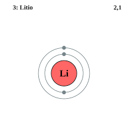
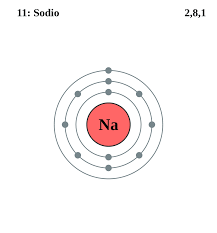
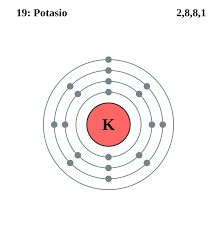
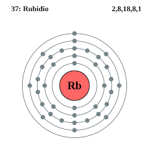
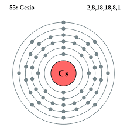
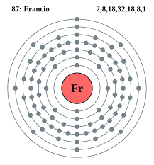

Los metales alcalinos o simplemente alcalinos (del árabe, alqali) son estos seis elementos químicos: litio (Li), sodio (Na), potasio (K), rubidio (Rb), cesio (Cs) y francio (Fr). Estos elementos, junto con el hidrógeno (que es un gas), constituyen el grupo 1 que se encuentra en el bloque-s de la tabla periódica.
Los metales alcalinos son metales brillantes, blandos, altamente reactivos a temperatura y presión estándar y pierden fácilmente su electrón más externo para formar cationes con carga +1. Todos se pueden cortar fácilmente con un cuchillo debido a su suavidad, exponiendo una superficie brillante que se empaña rápidamente en el aire debido a la oxidación por la humedad atmosférica y el oxígeno (y en el caso del litio, nitrógeno). Debido a su alta reactividad, deben almacenarse bajo aceite para evitar la reacción con el aire y se encuentran naturalmente solo en sales y nunca como elementos libres. El cesio, el quinto metal alcalino, es el más reactivo de todos los metales. Todos los metales alcalinos reaccionan con el agua, y los metales alcalinos más pesados reaccionan más vigorosamente que los más ligeros.
El litio es un elemento químico de símbolo Li y número atómico 3. En la tabla periódica, se encuentra en el grupo 1, entre los elementos alcalinos. En su forma pura, es un metal blando, de color blanco plata, que se oxida rápidamente en aire o agua.
Configuración electrónica: 1s²2s¹
Número atómico: 3
Masa atómica: 6.941 u
Electrones por nivel: 2,1
Electronegatividad: 0.98
Descubridor: Johann Arfvedson
El sodio es un elemento químico de símbolo Na con número atómico 11 que fue descubierto en 1807. Es un metal alcalino blando, untuoso, de color plateado, muy abundante en la naturaleza, encontrándose en la sal marina.
Masa atómica: 22.989769 u
Número atómico: 11
Configuración electrónica: [Ne] 3s¹
Radio de Van der Waals: 227 pm
Descubrimiento: 1807
Descubridor: Humphry Davy
El potasio es un elemento químico de la tabla periódica cuyo símbolo químico es K, cuyo número atómico es 19. Es un metal alcalino de color blanco-plateado, que abunda en la naturaleza en los elementos relacionados con el agua salada y otros minerales.
Masa atómica: 39.0983 u
Número atómico: 19
Configuración electrónica: [Ar] 4s¹
Electronegatividad: 0.82
Radio de Van der Waals: 280 pm
Punto de fusión: 63.5 °C
El rubidio es un elemento químico de la tabla periódica cuyo símbolo es el Rb y su número atómico es 37. El rubidio es un metal muy blando y de color blanco plateado del grupo de los metales alcalinos.
Configuración electrónica: [Kr] 5s¹
Número atómico: 37
Masa atómica: 85.4678 u
Electronegatividad: 0.82
Punto de fusión: 39.48 °C
Radio atómico: 248 pm
El cesio es el elemento químico con número atómico 55 y peso atómico de 132,905 u. Su símbolo es Cs, y es el segundo más pesado de los metales alcalinos en el grupo IA de la tabla periódica, después del francio; se encuentra en componentes no orgánicos
Configuración electrónica: [Xe] 6s1
Número atómico: 55
Electronegatividad: 0.79
Radio de Van der Waals: 343 pm
Masa atómica: 132.90545 u
Descubridores: Robert Bunsen, Gustav Kirchhoff
El francio es un elemento químico cuyo símbolo es Fr y su número atómico es 87. Su electronegatividad es la más baja conocida y es el segundo elemento menos abundante en la naturaleza. El francio es un metal alcalino altamente radiactivo y reactivo que se desintegra generando astato, radio y radón.
Configuración electrónica: [Rn] 7s1
Número atómico: 87
Electronegatividad: 0.79
Masa atómica: 223 u
Radio de Van der Waals: 348 pm
Descubrimiento: 7 de enero de 1939
